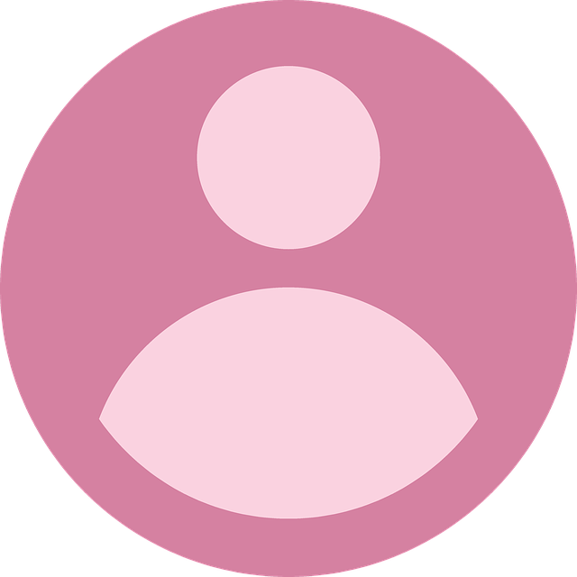

About Me
My full name is Christina Hana Jeong and I am currently 24 years old. Hana is also my Korean name and is written as "하나" in Hangul. It means "one". I was born and raised in El Paso, TX. My parents immigrated to the United States from South Korea in their 20's separately and met later in life. I am the youngest of 6.
I am a first generation college student and I attended the University of Notre Dame on a full scholarship. I was a part of the very 1st cohort of AnBryce scholars at my university. I graduated in 2017 with a degree in Film, Television, and Theater. During my undergraduate years, I held a particular interest in animation.